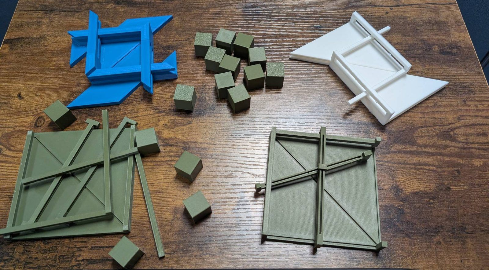

Liberty University Research Week 2026
A 3D-printed square-packing manipulative
What this release contains
The adjustable frame-and-slider assembly in both of its iterations: SOLIDWORKS sources, 3MF exports, and the two saved slicer project files that recorded how the parts were actually printed. Alongside them, the two OpenSCAD concepts, including the overlapping-corners frame, with corrected mathematics and calibration notes.
One model is not included: the Blender version of the overlapping-corners frame, whose export does not yet carry a usable scale.
Release 1.1.1 corrects the documentation only and extends the licence to every file; the model files are byte-identical to 1.1.0, which remains available.
The mathematics
Three cases, and one that is still open
Square packing asks a question anyone can state: if you have n identical unit squares, what is the smallest square that holds all of them? Write that smallest side as s(n). For perfect squares the answer is the obvious grid. Elsewhere it is not obvious at all, and rotating a piece can do better than lining everything up.
The artifact concentrates on three values, chosen because together they walk from settled mathematics into unsettled mathematics.
| Case | Lower bound | Best published construction | Status |
|---|---|---|---|
| n = 5 | 2 + 1/√2 ≈ 2.707107 | 2 + 1/√2 ≈ 2.707107 | Exact optimum |
| n = 10 | 3 + 1/√2 ≈ 3.707107 | 3 + 1/√2 ≈ 3.707107 | Exact optimum |
| n = 11 | 2 + 4/√5 ≈ 3.788854 | ≤ 3.87708359 | Unresolved |
For n = 5 and n = 10 the two columns agree, so the value is known exactly. For n = 11 they do not meet, and everything between them is open.
Why the release prints a frame that cannot be filled
Handing someone a frame that defeats them is the whole lesson. Failing to fill
the n=11 NO frame proves nothing on its own; plenty of
solvable puzzles defeat people. What makes it impossible is a proof, and what
makes the larger frame merely the best anyone has managed is the absence
of one. The two pieces in a hand are the difference between a construction, an
upper bound, a lower bound, and a settled optimum.
Release 1.1.1
Download
Adjustable frame and slider assembly
Joseph Holt's SOLIDWORKS model, in both iterations. The frame is identical across the two; every change is in the moving parts.
SOLIDWORKS files use a proprietary post-2015 container. If you cannot open them, the 3MF exports above carry the same geometry in a neutral format that any slicer or mesh tool will read.
How the parts were actually printed
The two saved Bambu Studio projects, included so the fabrication record can be checked rather than taken on trust. Each carries the complete effective configuration for its job.
The OpenSCAD concepts
Regenerating the exports
Both plates come from one source file, so nothing can drift out of step:
openscad -D 'part="frames"' -o frames-plate.stl frames-and-tiles.scad
openscad -D 'part="tiles"' -o tiles-plate.stl frames-and-tiles.scad
openscad -D 'show_cube=false' -D 'slideblue=112' \
-o overlapping-corners-pair.stl overlapping-corners.scad
Compiling frames-and-tiles.scad prints a verification line for every
frame, reporting its effective ratio against the bound it represents and flagging
DEMONSTRATION BROKEN if an edit has pushed a frame to the wrong side
of its bound.
Development record
How it was built
Three people worked in three different CAD environments (OpenSCAD, SOLIDWORKS and Blender), and the concepts below overlapped in time rather than following one another in sequence. Dates are those of the surviving files. All of this work preceded the Research Week presentation (20–23 April 2026).

| Concept | Tool | What it was | What it contributed |
|---|---|---|---|
| 1. Frames and tiles March 2026 |
OpenSCAD | Twelve flat tiles plus one rigid labelled frame per case. | Twelve 25 mm tiles; the demonstration set later used sixteen 20 mm cubes. No adjustability, and the first version had zero fit clearance. Published here, corrected. |
| 2. Sliding-wall corner March 2026 |
OpenSCAD | Two 5 mm walls, 21 mm tall, meeting at a right angle with a 45° diagonal bar. | First attempt at a boundary that moves rather than a frame that is fixed. |
| 3. Overlapping corners 30 March – 9 April 2026 |
OpenSCAD | Two congruent plates whose diagonal overlap shrinks the enclosed square continuously, so one pair covers every case. | Shares the 100 mm field and the 5 mm bar height of the SOLIDWORKS family. No captive slider, so the halves drift. Published here. |
| 4. Frame, sliders, pin 23 & 26 March 2026 |
SOLIDWORKS | A four-part family (Squares Demo Frame, Slider1, Slider2, Pin) in two iterations. The frame is identical in both; the sliders narrowed from 16.67 to 15.00 mm, the pin shortened by exactly one bar height, the assembly from 22.5 to 20.0 mm. | The artifact demonstrated at Research Week. Captive sliders and pins hold a setting after adjustment. Published here, both iterations. |
| 5. Overlapping L-brackets 2 – 13 April 2026 |
Blender | A return to the overlapping-corners principle as two L-shaped brackets with a diagonal brace. | The same principle as concept 3, modelled in Blender. Not published: the export carries no usable scale. |
What changed inside concept 3
The sliding-plate model is the only one whose revisions were captured with dates, so its history is exact rather than reconstructed:
- 30 March 2026: first working version: 40 mm triangle leg, 10 mm border layers, 20 mm tile pitch, dependent on an external library, every piece a separate solid.
- 31 March 2026: each colour unioned into one solid per half. A printability fix: the separately emitted overlapping pieces were not one watertight body.
- 9 April 2026: triangle leg raised to 105/√2 so the overlap diagonal spans the full corner-to-corner distance; border layers halved from 10 to 5 mm, converging on the final family's universal bar height; tile pitch dropped from 20 to 16 mm; library dependency removed.
A correction worth stating plainly
The first concept's source hard-coded case multipliers that did not match the literature: 2.41421356 for n = 5, 3.306 for n = 10, a bracket of guesses for n = 11, and 3.5 for n = 12. They were placeholders from the project's first week that were never revisited. The file published here replaces them with the published values, each sourced in a comment, and drops n = 12 entirely, because the sources this project cites do not settle it and printing a frame implies a claim about a bound.
Fabrication
Printing and calibration
Every value below is read from the two saved Bambu Studio project files in this
release, not reconstructed. Both are included so the record can be checked rather
than taken on trust; the full version is in
FABRICATION.txt.
| Common to both saved projects | Value |
|---|---|
| Slicer | Bambu Studio 02.04.00.70 |
| Printer, nozzle | Bambu Lab A1; 0.4 mm stainless steel |
| Build plate | Textured PEI |
| Material | Bambu Lab PLA Matte |
| Layer height | 0.20 mm, first layer 0.20 mm |
| Shells | 5 top layers, 3 bottom layers |
| Surface patterns | Monotonic line on top, monotonic beneath |
| Internal solid infill | Zig-zag |
| Sparse infill density | 15% |
| Supports | Normal (automatic), 30° threshold, not limited to the plate |
| Elephant-foot compensation | 0.075 mm |
| Wall generator | Classic |
Six settings are not common. The corners and cubes were printed with more walls, gyroid infill and a slower outer wall than the frame and sliders, which is worth knowing before you reprint either one.
| Setting | Frame and sliders · 24 Mar | Corners and cubes · 31 Mar |
|---|---|---|
| Process preset | 0.20mm Standard @BBL A1 | 0.20mm Strength @BBL A1 – Copy |
| Wall loops | 2 | 3 |
| Sparse infill pattern | Grid | Gyroid |
| Outer-wall speed | 200 mm/s | 60 mm/s |
| Brim | Outer only, 5 mm | Brim ears |
| Print sequence | By layer | By object |
One component has no surviving project file
No saved project exists for Frame and Slider Assembly 2.0, the iteration that was demonstrated. A print-monitor screenshot from that job records 201 layers, 68.18 g and 2 h 12 m 47 s, and the assembly measures 20.0 mm tall in CAD. A 20 mm part needs 100 layers at 0.20 mm and 200 at 0.10 mm, so that print appears to have run at roughly 0.10 mm, finer than its predecessor. That is an inference from two measurements, not a reading from a file, and it is flagged here as the weakest claim on the page.
Measured geometry
| Feature | Measured |
|---|---|
| Frame, both iterations | 115.0 × 115.0 mm in plan, 20 mm walls |
| Usable tray field | 100 mm |
| Universal bar height | 5.0 mm |
| Unit cube | 20.0 × 20.0 × 20.0 mm |
| Overlapping-corners half | 100.0 × 100.0 × 25.0 mm |
| Set size | Sixteen cubes |
The clearance values are totals, not per-side
The SOLIDWORKS comment fields say so explicitly: frame 0.16 mm, track 0.08 mm, slider 0.16 mm, pin 0.16 mm, each a total. Per side that is 0.08 mm on the frame, slider and pin, and 0.04 mm on the track. Apply them per side instead and you get twice the intended slop, which is the failure mode that lets a physical arrangement appear to beat a published bound.
Neither OpenSCAD plate needs supports. Both are flat-bottomed with no overhangs. A brim helps the OpenSCAD frames, whose walls are 4 mm wide and 10 mm tall and can lift at the corners.
Clearance is deliberately asymmetric
The two kinds of dimensional error are not equally harmful. A frame that is too tight is annoying. A frame that is too loose lets someone produce an arrangement that appears to beat a published bound, which teaches something false. So the release tightens in one direction and loosens in the other:
- tiles print slightly under nominal, so they slide;
- frames that must close are sized slightly over their bound;
- the n = 11 lower-bound frame is sized slightly under its bound, so that after every tolerance it remains provably impossible to fill.
| Parameter | Default | Meaning |
|---|---|---|
tile_side | 25 mm | Nominal mathematical unit square |
tile_clearance | 0.30 mm | Total, subtracted from the printed tile |
frame_margin | 0.40 mm | Total, added to frames that must close |
bound_margin | 0.40 mm | Total, subtracted from the impossible frame |
To re-tune for a different printer, print the tiles plate first and measure a tile
across two opposite faces. Adjust tile_clearance until a printed tile
measures 24.7 mm, then re-export the frames. Do not enlarge the frames to fit
oversized tiles; that is the change that breaks the
n = 11 demonstration. Recompile after any edit and read the
echoed verification lines.
Reuse
Licence and citation
Every file in this release (the OpenSCAD sources and STL exports, the SOLIDWORKS sources and 3MF exports, the Bambu Studio projects, and the documentation) is licensed CC BY 4.0. Copy them, print them, adapt them, sell what you make with them; just say where they came from. The licence does not cover the published mathematical results the models represent, which belong to their authors and are cited below.
Suggested citation:
Volk, A. H., Drambi, J., & Holt, J. (2026). Square packing manipulative
(Version 1.1.1) [3D model files].
https://andrewhvolk.github.io/RW26.htmlReferences
- Erdős, P., & Graham, R. L. (1975). On packing squares with equal squares. Journal of Combinatorial Theory, Series A, 19(1), 119–123. https://doi.org/10.1016/0097-3165(75)90099-0
- Friedman, E. (1998/2009). Packing unit squares in squares: A survey and new results. The Electronic Journal of Combinatorics, Dynamic Survey 7. https://doi.org/10.37236/28
- Gensane, T., & Ryckelynck, P. (2005). Improved dense packings of congruent squares in a square. Discrete & Computational Geometry, 34, 97–109. https://doi.org/10.1007/s00454-004-1129-z
- Göbel, F. (1979). Geometrical packing and covering problems. In A. Schrijver (Ed.), Packing and covering in combinatorics (Mathematical Centre Tracts 106, pp. 179–199). Mathematisch Centrum.
- Stromquist, W. (2003). Packing 10 or 11 unit squares in a square. The Electronic Journal of Combinatorics, 10(1), Article R8. https://doi.org/10.37236/1701
Check before you print
The n = 11 case is open, which means this page can go out of
date in a way most project pages cannot. If a better construction or a matching
proof has appeared since October 2026, the frame labelled
n=11 best is no longer the best known and the demonstration needs
revising. Recheck the current status before reprinting a class set.